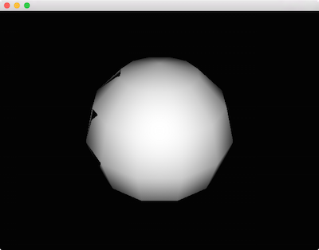
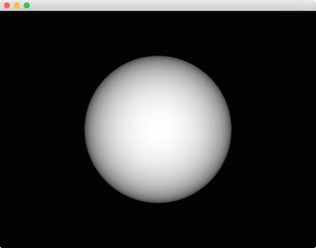

The Third Dimension
Now that we've gotten comfortable with transformations and basic drawing, let's look at how to work in 3D. If you explore some of the ci::gl namespace you'll spot some 3D cousins to gl::drawSolidCircle() - functions like gl::drawSphere() and gl::drawCube().
Let's see what happens if we simply swap in a call to gl::drawCube():
#include "cinder/app/App.h"
#include "cinder/app/RendererGl.h"
#include "cinder/gl/gl.h"
using namespace ci;
using namespace ci::app;
class BasicApp : public App {
public:
void draw() override;
};
void BasicApp::draw()
{
gl::clear();
// this will work, right?
gl::drawCube( vec3(), vec3( 2 ) );
}
CINDER_APP( BasicApp, RendererGl )
Not quite what we'd hoped for. As you may recall, by default Cinder sets things up so that the coordinate systems match the app::Window pixel-for-pixel in 2D. However to draw in 3D we'll need to create a 3D coordinate system. The simplest way is to use a CameraPersp. This class allows us to create a virtual camera with a number of different properties, the most important being the point at which the camera is positioned, and the point that it is looking at. To position a CameraPersp at (3, 3, 3) and have it look at the point (0, 0, 0), we'll use CameraPersp::lookAt( vec3( 3 ), vec3( 0 ) ).
A very valuable tool for understanding the CameraPersp class is the sample by the same name:

After creating a CameraPersp and setting these properties, we need to set our matrices accordingly. In addition to the Model matrix discussed previously, Cinder maintains the View matrix and the Projection matrix. While the Model matrix is used to position an object in the world (more formally the object to world-space transformation), the View matrix is used to position our virtual "eye" in the world (the world to view-space transformation). We are manipulating a View matrix when we call routines like CameraPersp::lookAt(), thereby modifying the position and orientation by which the virtual world is viewed. Other properties affect how 3D is projected onto the 2D image plane or screen. These include the aspect ratio, field-of-view and clipping planes. Together, this data represents a Projection matrix. By calling gl::setMatrices() and passing a CameraPersp Cinder's active OpenGL View and Projection matrices are set.
void BasicApp::draw()
{
gl::clear();
CameraPersp cam;
cam.lookAt( vec3( 3, 3, 3 ), vec3( 0 ) );
gl::setMatrices( cam );
gl::drawCube( vec3(), vec3( 2 ) );
}
While it lacks the shading that we normally associate with 3D, the result is the distinctive outline of a cube. We'll look at how to improve its look soon, and some of the details of how these matrices interact with convenience methods like gl::drawCube() will become apparent as well. In the meantime, a helpful debugging tool can be to print these matrices to the console. For this purpose we can use gl::getModelMatrix(), gl::getViewMatrix(), and gl::getProjectionMatrix().
console() << gl::getProjectionMatrix() << std::endl;
Output:
[[ 1.299, 0.000, 0.000, 0.000]
[ 0.000, 1.732, 0.000, 0.000]
[ 0.000, 0.000, -1.002, -2.002]
[ 0.000, 0.000, -1.000, 0.000]]
Let's add some simple Lambert shading to the example. We'll get into shaders in more detail later, but for the time being we'll use gl::ShaderDef. This allows us to easily create basic shaders without writing any GLSL shader code. In order to make this the active shader, we call gl::getStockShader(), and then bind() the result. Again, we'll go into much more depth with shaders in the upcoming sections, so don't get too hung up on this yet.
#include "cinder/gl/Shader.h"
…
void BasicApp::draw()
{
gl::clear();
CameraPersp cam;
cam.lookAt( vec3( 3, 3, 3 ), vec3( 0 ) );
gl::setMatrices( cam );
auto lambert = gl::ShaderDef().lambert();
auto shader = gl::getStockShader( lambert );
shader->bind();
// draw sphere at the origin, radius 1
gl::drawSphere( vec3(), 1.0f );
}

This is a start, but has a couple of visible problems. We've switched to gl::drawSphere(), but the sphere itself looks pretty low resolution. Perhaps more problematic though, there are mysterious black triangles on its left side. Fortunately the solution for both of these problems is straightforward:
void BasicApp::draw()
{
gl::clear();
// turn on z-buffering
gl::enableDepthRead();
gl::enableDepthWrite();
CameraPersp cam;
cam.lookAt( vec3( 3, 3, 3 ), vec3( 0 ) );
gl::setMatrices( cam );
auto lambert = gl::ShaderDef().lambert();
auto shader = gl::getStockShader( lambert );
shader->bind();
gl::drawSphere( vec3(), 1.0f, 40 );
}

Much better. First, our black triangle artifact is gone, because we've enabled the Z-Buffer (also known as the depth buffer). If you're not familiar, Z-Buffering is the standard technique for preventing fragments from drawing on top of each other incorrectly. It uses a per-pixel depth value to ensure that no pixel draws on top of a pixel it is "behind." Various effects can be achieved by variously enabling and disabling depth buffer read and write, as well as its testing function, which we won't be exploring here. Just keep in mind that in the general 3D case, we want to call gl::enableDepthRead() and gl::enableDepthWrite(). In addition this example provides the optional third parameter to gl::drawSphere() which increases the subdivisions to 40, resulting in a much smoother appearance.